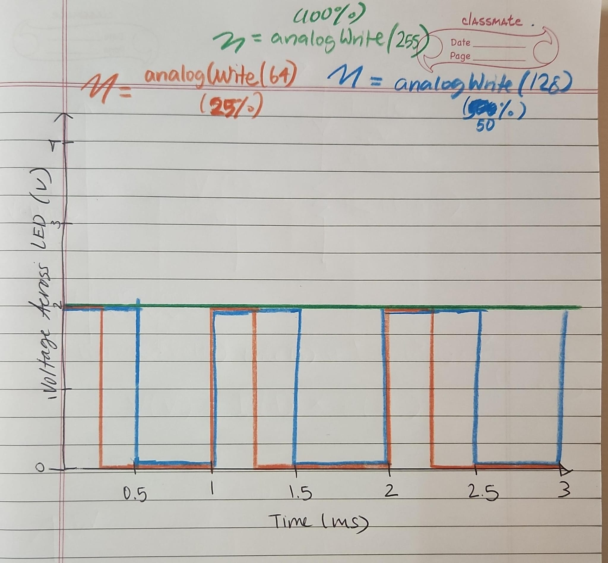

Assignment 2: Fade!
Firmware-Code from Arduino IDE
/*
A2_Ayesha Khan
Started from the template taken from a public domain
https://docs.arduino.cc/built-in-examples/basics/Fade/
When started the green light is on, when the button is pressed, all lights turn off.
Then each turn off and fade off from red to yellow to green (but it stops at green and
doesn't fade)
*/
int greenled = 9; // the PWM pin the green LED is attached to
int yellowled = 10; // the PWM pin the yellow LED is attached to
int redled = 11; // the PWM pin the red LED is attached to
int brightness = 0; // how bright the LED is
int fadeAmount = 5; // how many points to fade the LED by
int buttonpin = 2; // the pin that the push button is on
bool buttonpressed = false; // setting the button down to false, only becomes postive when you press
// the setup routine runs once when you press reset that runs once
void setup() {
// declare all the LED pins to be outputs
pinMode(greenled, OUTPUT); //green led to be output
pinMode(yellowled, OUTPUT); //yellow led to be output
pinMode(redled, OUTPUT); //red led to be output
pinMode(buttonpin, INPUT); //declare the button to be input
//starting with green LED and others off
digitalWrite(redled, LOW); //the red led will be off
digitalWrite(yellowled, LOW); //yellow will be off
digitalWrite(greenled, HIGH); //green will be on
}
// the loop routine runs over and over again forever:
void loop() {
int buttonState = digitalRead(buttonpin); // storing the state of the button as HIGH or LOW
// check if button is pressed, if it is then we changed the state to true
if (buttonState == HIGH && !buttonpressed) {
buttonpressed = true; //setting buttonpressed to true
fadelights(); //running the fading function
}
// after the button state is again low, then changing the buttonpressed variable back to false
if (buttonState == LOW) {
buttonpressed = false; //making sure that pressing the button doesnt end up in a forever loop
}
}
// funciton to start the fading of the three lights from red to yellow to green
void fadelights() {
// fading red led down
for (brightness = 255; brightness >= 0; brightness -= fadeAmount) { //decreasing the fadeamount until 0
analogWrite(redled, brightness); // decreasing the brightness each time, using analog to fade
analogWrite(yellowled, 0); // yellowled's should be off
analogWrite(greenled, 0); //green led should become off
delay(15);
}
delay(250); //let green light be off
// fading yellow led up
for (brightness = 0; brightness <= 255; brightness += fadeAmount) {//increasing the fadeamount until 255
analogWrite(redled, 0); //redled's should be off
analogWrite(yellowled, brightness); // fade yellow up
analogWrite(greenled, 0); //greenled's should be off
delay(15); //adding a delay
}
delay(250); //let yellow light show
// fading yellow led down
for (brightness = 255; brightness >= 0; brightness -= fadeAmount) { //decreasing the fadeamount until 0
analogWrite(redled, 0); //redled's should be off
analogWrite(yellowled, brightness); // fade yellow down
analogWrite(greenled, 0); //greenled's should be off
delay(15); //adding a delay
}
delay(250); //let yellow light be off
//fading green led up
analogWrite(redled, 0); //state of red LED is back at 0
analogWrite(yellowled, 0); //state of yellow LED is back at 0
analogWrite(greenled, 255); //state of green is back at 255
}
Additional Questions
Question 1
Here is a graph with X axis is time and Y axis is voltage for an LED with the three analog writes:

Question 2
My circuit has the LEDs drawing current, and the green LED is on for most of the time. It only turns
off if you press the button. So assuming that the green LED will draw most of the power (because the fade sequence is
so short), I use the 1.8 voltage drop to calculate the current. Since current = (5.0 - 1.8V)/220 Ohms, my current in mA is 14.5 mA
Since we are given the 1200 mAh battery capcacity, to cacluate batterlife we divide by the current of 14.5 mA, and we get
82.76 hours. This is approximately how long my circuit would run
Question 3
Using information I found on ChatGPT (since my multimeter wasn't working), an average voltage rating for the green led of
2.1 to 2.3 correlates to a true green while other types range from 2.8 to 3.2. Since the data sheet has told me 1.8 V drop, and based
off the color of my LED, I'm assuming that we have the true green LED. I'll be asking for a new multimeter next class!
Question 4
I searched Google for the formula for calcuting battery life and help me with my math calculations.
My multimeter was not working, so after trying for one hour, i decided to just use an average led voltage for my conclusion
from chatGPT. I asked it what the average was and it told me between 2.1-2.3 V for green LED.